自己紹介
高等専門学校から現在に至るまで、主にロボットの制御やその応用に関する研究開発に取り組んでいます。
高専本科では、研究室のチームで廃炉創造ロボコンに参加しました。その中で私は、ROSを用いたセンサー制御システムの開発と、UnityによるUI設計を担当し、ROSとUnityの連携システムを構築しました。
続く高専専攻科では、二つの研究活動に注力しました。一つは、本科から継続して廃炉創造ロボコンへの挑戦です。専攻科では、これまでの経験を活かし、さらに高度なシステムの開発、より直感的なUIを設計し、ロボットの操縦性向上に尽力しました。
もう一つは、福島第一原発の廃炉作業円滑化を目指した放射線源マッピング技術の開発です。複数ロボット連携により放射線源を3次元環境地図へ反映するシステムをROS2基盤で構築し、SLAM、点群処理、経路計画等のアルゴリズムを統合。実機実験でその有効性を実証しました。
現在は、東北大学大学院に在籍し、積層法と実装技術を組み合わせた医療機器の自動組立システムに関する研究に注力しています。ロボットアームやディスペンサーを精密に制御することで、微細部品の搬送から接着剤の塗布に至る一連の工程を自動化することを目指しており、精密作業における自動化技術と、医療という異分野の知見を深めています。
研究内容
廃炉措置高所除染遠隔操作ロボットの操作システム開発
(高専本科～専攻科)
本研究では、以下に示す高所除染遠隔操作ロボットを動作させる際に、周囲の状況やロボットの動作状態をオペレータが直感的に把握することを可能とする操作システム及びUIの開発を目的とする。
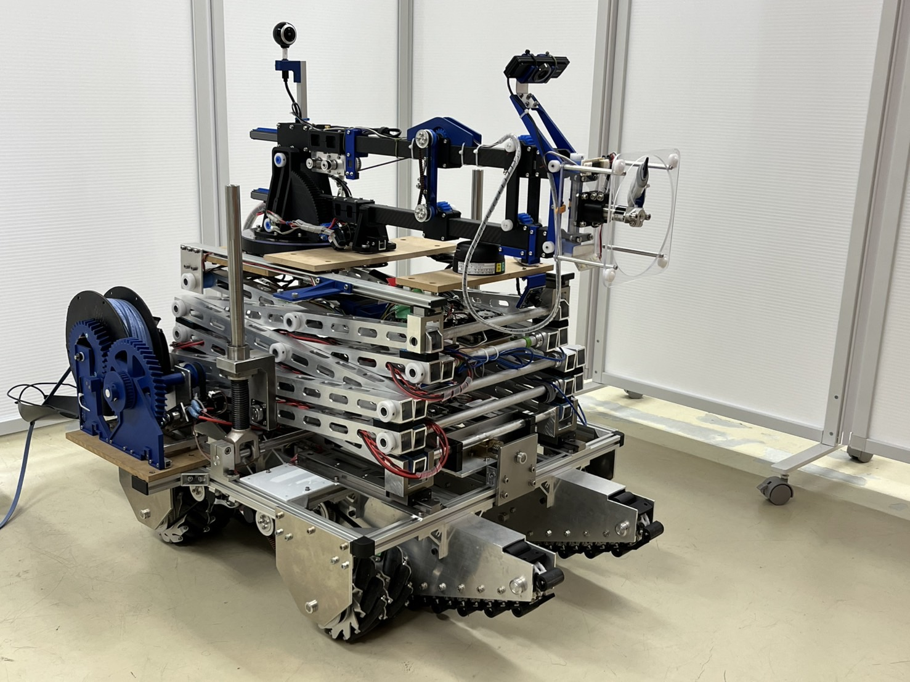
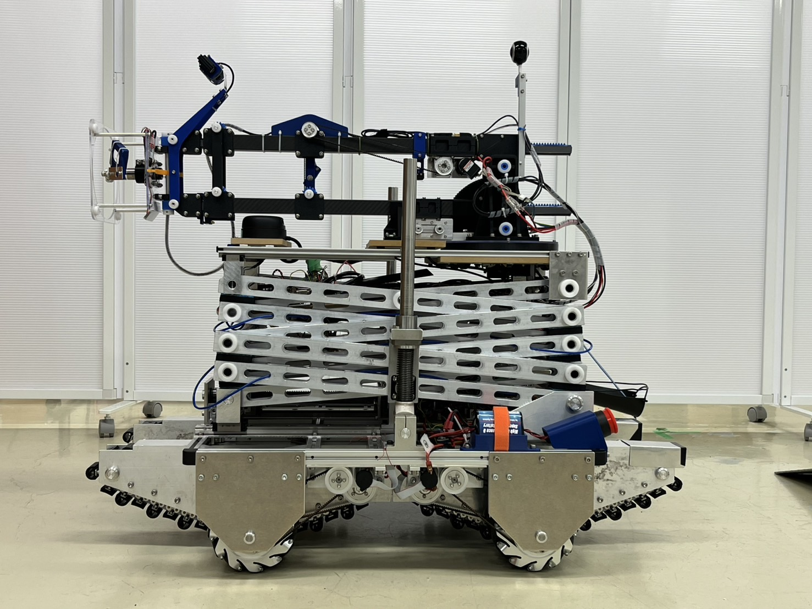
除染のシナリオ
除染シナリオは第8回廃炉創造ロボコンの競技課題を基に設定。オペレーターが直接見ることができない模擬フィールド内でロボットを遠隔操作し、高所壁面を除染することを目的とする。 実際の除染作業では表面を削るなどの方法が取られるが、本研究では壁に設置された模造紙をペンで塗りつぶすことで、作業の精度を評価する。
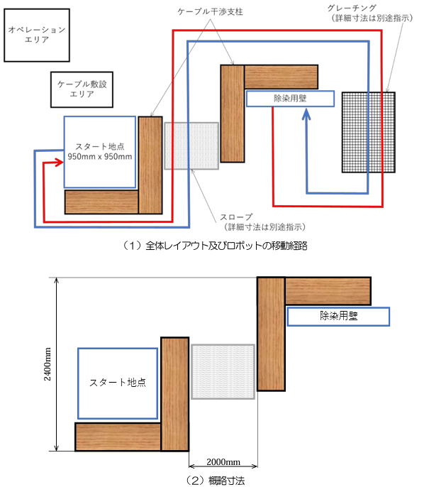
メイン機構
ベース移動機構：
メカナムホイールとクローラを組み合わせ、全方位移動、段差の乗り越えを可能にする。
パンタグラフ機構：
台形ねじ、コイルばねのサスペンション機構により展開する。機体上部を高さ方向に約1.5m上昇させることが可能。
ケーブル巻取り機構：
ロボットに接続しているLANケーブルの巻き取り・放出を行う。トラバースカムによるケーブルガイドを設置し、ドラムへ巻き取る際のLANケーブルの偏りを防止する。
除染アーム機構：
Pitch 軸・Yaw 軸・伸縮の3自由度を持つ極座標型アーム。除染部壁面に対するアーム先端Pitch姿勢を一定に保つため、平行リンクにより構成されている。
操作システム
オペレーターは、PCとゲームパッド「DUALSHOCK4」を使用してロボットを操作する。 操作は「通常移動モード」、「除染作業モード」の2つに分け、限られたボタン数で複雑な操作を可能にした。 ロボットとオペレーターのPCは、有線LANを介してROS(Robot Operating System)をベースとしたシステムで通信する。 ロボット側にはデータ処理用のシングルCPUボード（Jetson Nano）と、モーター制御用のマイコンを搭載している。
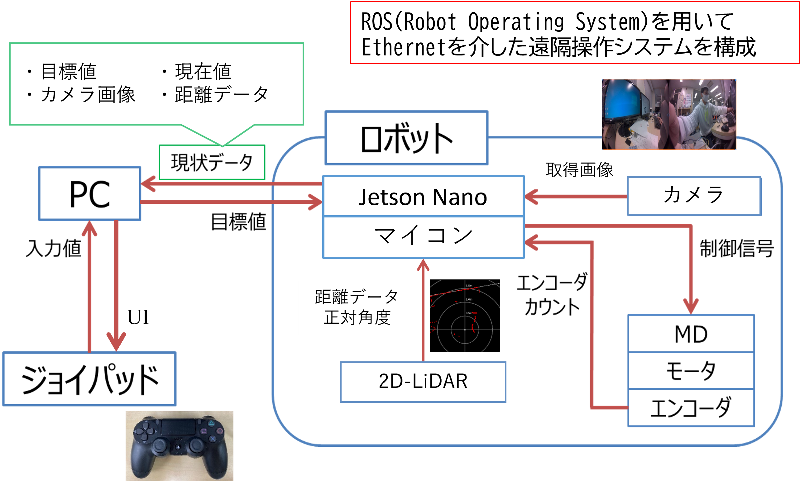
ユーザーインターフェース
ロボットの状態や周囲状況を直感的に把握することを目的とし、Unityで作成した。Jetson Nanoと通信できるようにし、ロボットが取得するデータ（カメラ画像やモーターエンコーダ出力）を収集できるようにした。
取得したデータはUnity上で処理し、オペレーターが見やすいように整理して表示する。表示項目はカメラ画像、2D-LiDARデータ、各種モーター出力、アームの姿勢などである。
移動から除染を一台のコントローラー入力で制御するため、2つのモード（「通常移動モード」と「除染作業モード」）を作成し、作業ごとに操作可能な機構を切り替えられるようにしている。
除染作業を効率的に行うため、以下のアルゴリズムを実装した。
・2D-LiDARのデータからHough変換を用いて壁面を検出し、壁との距離と正対角度を可視化する機能
・壁面の除染開始位置と終了位置を指定すると自動でアームを動かして除染を行う自動除染機能
評価実験と結果
模擬フィールドでの評価実験では、作成した制御システムを用いてロボットを操作し、タスクを完遂することができた。
複数ロボット連携による放射線源の3次元環境地図への反映
(専攻科)
本研究では、福島第一原子力発電所の廃炉作業円滑化を目的とした、放射線源マッピングシステムを開発した。具体的には、高精度かつ環境色を付与された3次元環境地図の生成手法、複数ロボットの同時制御に向けたナビゲーション管制システム、ロボットによる複数地点での放射線計測データを統合し、汚染部位を特定・可視化するシステムを開発した。
システム構成
開発したシステムの概要を以下に示す。親機は3次元環境地図を生成するとともに、搭載検出器により簡易的なヒートマップを生成し、汚染部位を大まかに特定できるようにする。 子機は自身の3D-LiDARスキャンデータと親機が生成した環境地図を参照照合することで自己位置を推定するとともに、指定された位置へ自律移動する。 そして、子機に搭載された検出器のデータを基に汚染部位を可視化し、その位置を特定する。 以上のシステムをROS2をベースに開発し、小型で不整地対応能力の高いヘキサポッドロボット(株式会社シマノ製、Loiter2020_ver1.1)を用いて検証する。
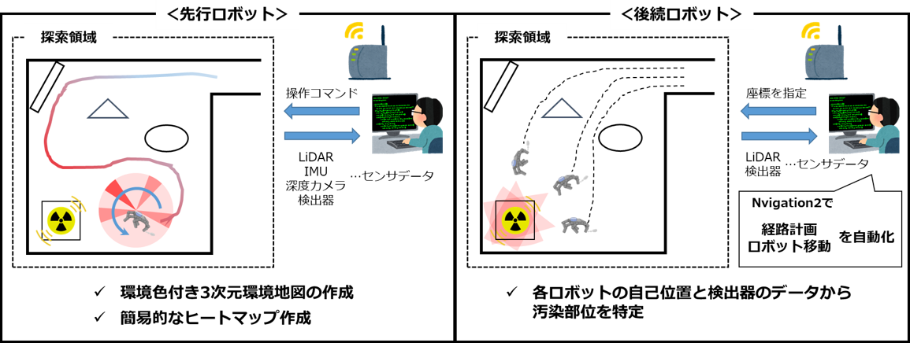
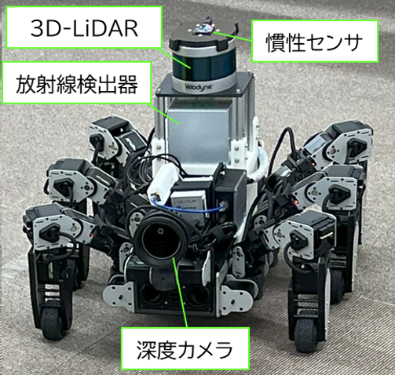
検証のため、研究室の実験環境にて反映実験を行った。
3次元環境地図の生成
3次元環境地図の生成には、3D-LiDARと慣性センサを用いて、移動ロボットの軌跡推定と3次元地図生成をリアルタイムで実現するフレームワークであるLIO-SAMを使用した。 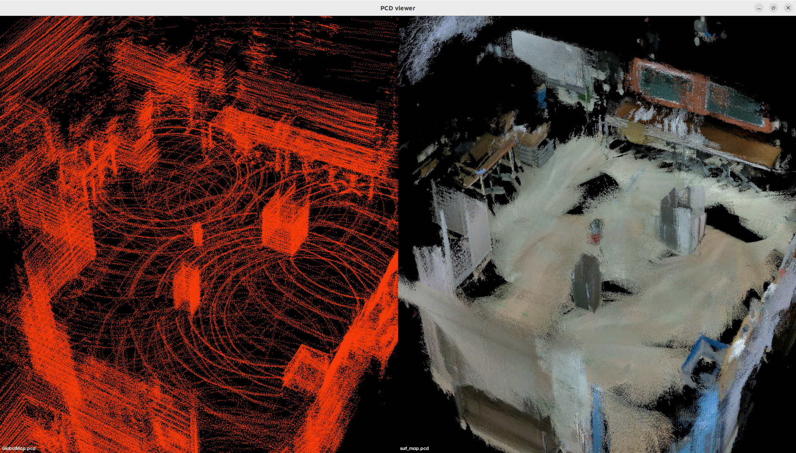
生成3次元環境地図は座標データのみの点群で構成されており、そのままプロットしても視認性に乏しい。そのため、ロボットに標準搭載の深度カメラのRGB付き点群データをロボットの移動軌跡上に順次座標変換しプロットしていくことで環境色を付与した。
簡易的なヒートマップ生成
ロボットに搭載した放射線検出器からは、入射した放射線のカウント数データをリアルタイムで収集可能である。このデータを数秒ごとに区切り、カウント数の変化率に応じて色相を変化させ、ロボットの移動軌跡上に表示することで簡易ヒートマップを生成できるようにした。
この機能により、放射線源に近い場所で色相が変化し、汚染部位の大まかな特定に役立つことが確認できる。
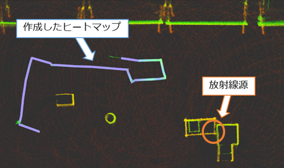
ナビゲーション管制システム
ナビゲーション管制システムは、移動ロボットを目的地まで誘導するための経路計画、自己位置推定、障害発生時の回復動作など、ロボットの行動に関わる包括的なナビゲーション機能を提供するシステムツールであるNavigation2をベースに開発した。
子機の自己位置推定は汚染部位の特定において高い精度が求められる。しかし、Navigation2に標準搭載されている自己位置推定手法は、2次元点群を用いる確率的手法であるため、3次元環境における精度不足が懸念される。そこで、本システムでは、3次元空間にも適用可能なNDT(Normal Distribution Transform)アルゴリズムを用いて子機の自己位置を推定する方針を採用した。
以下にロボットの自律ナビゲーションによる移動実験の結果を示す。ロボットは適切な経路で目標地点までナビゲーションできたことを確認できる。
3次元環境地図上への線源位置反映
3次元環境地図上の線源と思われる部位にマーキングをするには、子機の自己位置とロボットから見た放射線源の方位情報を用いる。
実験には過去に計測された模擬計測データを使用する。放射線計測データは検出器より方位角、仰角10度ごとの線源の存在確率で得られる。これを仮想天球面上で考えセグメント化し、計測結果の方位角、仰角を基軸とした点群探索円錐を作成、円錐内に含まれる点群に色付けすることで、点群ベースの環境地図に計測データを反映できるようにした。
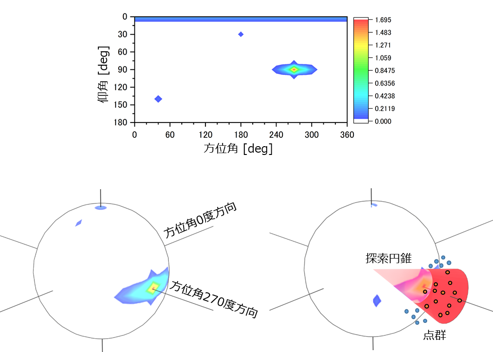
この線源位置の反映を複数地点で実行すると、重複してマーキングされる点群が発生する。本システムでは、この重複点群のみを最終的な反映結果として色付けすることで、より精度の高い放射線源の可視化を図る。
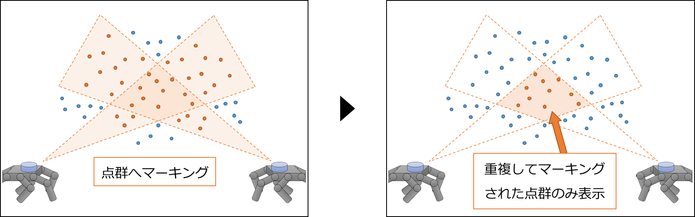
複数ロボットによる線源位置マッピングを検証するため、研究室の実験環境にて反映実験を行った。 以下に示すように、検出器の模擬計測データを基に放射線源を仮定し、その周囲にロボットを自律ナビゲーションすることで、模擬計測データ取得時の状況を再現する。 なお、本研究では一台のロボットで実験を行うが、便宜上、ロボットの配置場所によって一号機、二号機、三号機と区別する。
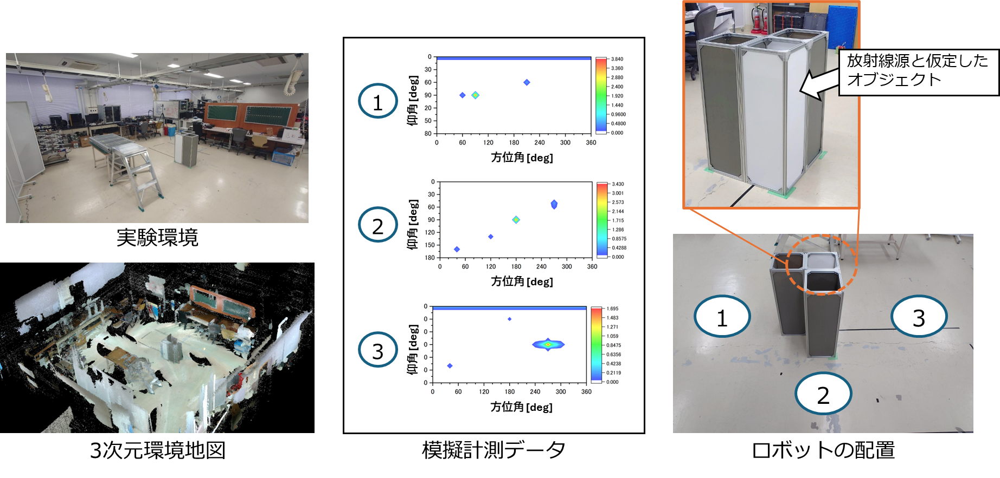
実験の結果、以下に示すように、放射線源の位置を3次元環境地図上に反映できたことを確認できた。
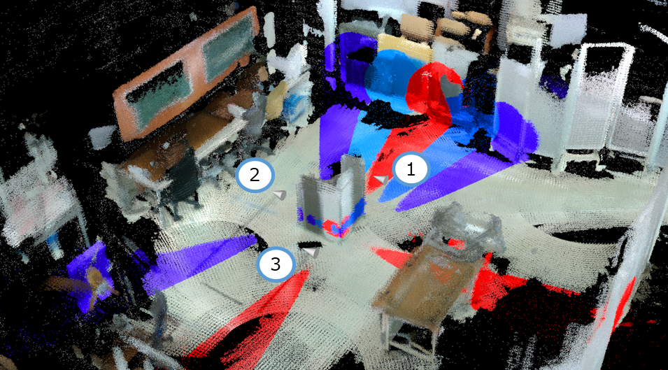
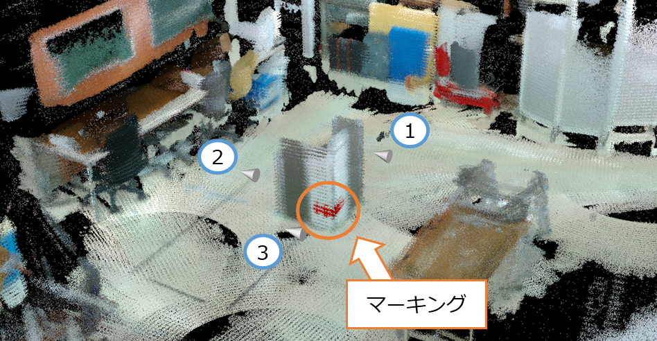
積層法と実装技術を組み合わせた医療機器の自動組立システム開発
(大学院)
近年、低侵襲手術の需要が世界的に高まりつつある。この潮流に伴い、革新的な医療機器の開発が活発化しているが、製品化するには薬事承認を得るための認証試験や臨床評価を通過する必要があり、新製品の市場投入には時間がかかる。
そのため、医療機器の開発ではコンセプトをいかに迅速かつ確実に、実際に機能する形へと具現化し、改良を重ねていくかが重要となり、ここで戦略的な鍵を握るのが試作品の量産である。
しかし、微細で複雑な構造を持つ医療機器の組立は、熟練技術者の手作業に大きく依存している。この属人的なプロセスは、組立に時間を要し迅速な開発サイクルに対応できない点、さらに作業者の技術やコンディションによって品質にばらつきが生じる点が大きな課題となる。
そこで本研究では、独自の自動組立装置を開発・導入することで、精度・量産性・汎化性の高い自動組立システムの構築し、医療機器の試作品量産体制確立を目指す。
システム構成
本システムは、中核コントローラーとしてRaspberry Pi 4Bを据え、FDM方式の3Dプリンター、3軸直交ロボット、部品把持用の電動平行グリッパ、接着剤塗布用のディスペンサーをPythonで統合制御する構成である。
3軸直交ロボットの搬送範囲には3Dプリンターと部品配置スペースが設置されており、主に3Dプリンターのベッド上で部品の組立を行い、完成品を部品配置スペースに搬送する。3軸直交ロボットのヘッド部にはグリッパとディスペンサーに接続されたシリンジを搭載し、把持搬送・接着剤の塗布を行う。
現在の課題・今後の展望
本研究における最大の課題は、組立精度のさらなる向上と、マイクロメートルオーダーの微小部品の把持・接着である。先行研究では、連続で6個の完成品を製作することに成功したものの、使用した部品は小さくても数mm程度だった。
しかし、本研究では対象とする医療機器を拡大し、直径0.125mmのファイバーや直径0.2mmのガラス玉といった、より微細な部品の把持・搬送する能力が求められるようになった。
これにより、高精度位置決め及び接着剤の微小塗布技術の確立、微小部品が正確に把持・接着されているかを自動で検査・確認するプロセスの構築が必要となった。
これらの課題を乗り越えるため、以下の機能開発を進めている。
1. 把持状態の確認：グリッパが部品を正確に把持できているかの確認（信号処理・画像認識）
2. 塗布状態の検査：塗布された接着剤の量や位置の自動検査
3. 位置決めの補正：ロボットの位置決め誤差を修正するビジュアルフィードバック
現在は、組立装置に求められるこれらの機能を詳細に洗い出し、具体的なアルゴリズムを開発している段階である。
並行して、本自動組立システムをさらに汎化するため、AIを導入した部品の把持搬送システムの開発も計画しており、以上が現在のタスクとなっている。
業績
学術論文
- 横井健人, 河田竜太郎, 金子慎一郎, "複数ロボット連携による放射線源の3次元環境地図への反映", ロボティクス・メカトロニクス講演会2024講演論文集, 2024.
学会発表
- 横井健人, "複数ロボット連携による放射線源の3次元環境地図への反映", ロボティクス・メカトロニクス講演会2024, 2024.
受賞歴
- 第8回廃炉創造ロボコン, 特別賞・東芝エネルギーシステムズ, 2023.
- 計測自動制御学会, 優秀学生賞, 2025.